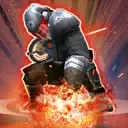

Ninth Sister
A ruthless member of the feared Inquisitorius who will stop at nothing in her hunt for the Jedi
A ruthless member of the feared Inquisitorius who will stop at nothing in her hunt for the Jedi
Deal Physical damage to target enemy. Then, deal Physical damage again, dealing 40% more damage. Inflict 1 stack of Purge (max 6) on target enemy for the rest of the encounter. If the target is a Jedi, this inflicts a second stack of Purge and can't be resisted.
Deal Physical damage and consume all stacks of Purge on target enemy. For each stack of Purge removed, inflict that many Damage Over Time effects on target enemy for 1 turn, which can't be resisted, and Ninth Sister gains that many Heal Over Time effects for 1 turn. If the target is a Jedi, dispel all of their buffs.

Deal Physical damage to all enemies and inflict Daze, Defense Down, and Potency Down for 2 turns, which can't be resisted by Jedi. Ninth Sister gains Taunt for 2 turns. For each enemy inflicted with Purge and damaged by this ability, Ninth Sister gains 10% Defense (stacking, max 50%) for 2 turns.
Allies are immune to Speed limiting effects. Whenever an enemy gains bonus Turn Meter, all Inquisitorius allies gain 2% Potency and 2% Tenacity (stacking) for the rest of the encounter. If that enemy is a Jedi, they have a 50% chance to gain a stack of Purge (max 6) until the end of the encounter.
Omicron Boost : While in Territory Wars: All Empire allies gain 20% Defense and all Inquisitorius allies are immune to Ability Block and Stun.

For each other Empire ally present at the start of battle, Ninth Sister gains 5% Defense, Max Health, and Tenacity; these effects are doubled for Inquisitorius allies. Each time another Empire ally is damaged by a critical hit, she gains Taunt and 50% Critical Avoidance for 1 turn, and Empire allies gain 20% Critical Avoidance for 1 turn. If the ally is also an Inquisitorius, Ninth Sister recovers 5% Health.
At the start of battle, if all allies (minimum 3) are Inquisitorius, this character gains 20% Max Health, Max Protection, and Potency. Whenever this character loses Taunt, gain Taunt for 1 turn if an enemy has Purge. Whenever an enemy damages this character with an attack while attacking out of turn, that enemy gains a stack of Purge (max 6), which can't be evaded or resisted. Whenever Purge is consumed or dispelled on an enemy, this character gains 3% Turn Meter.